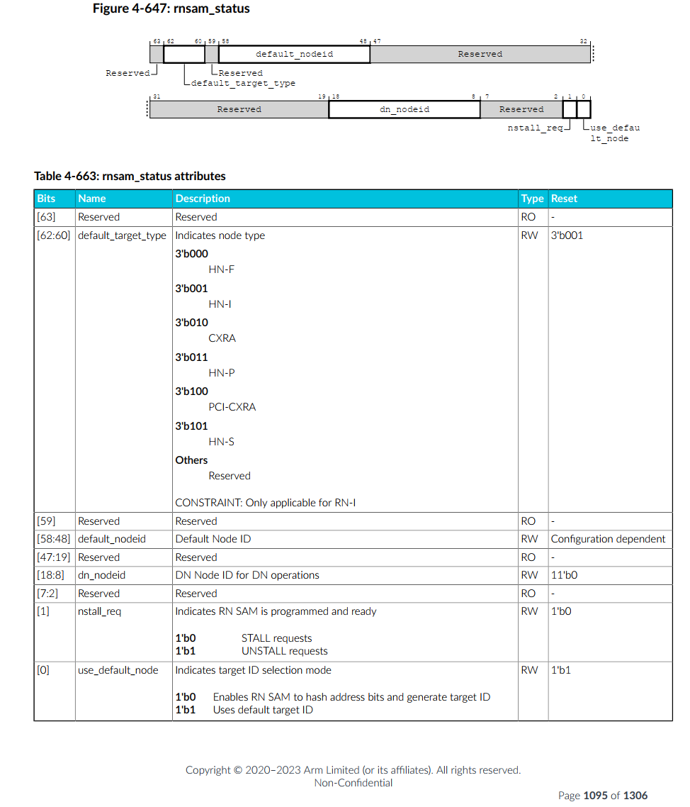
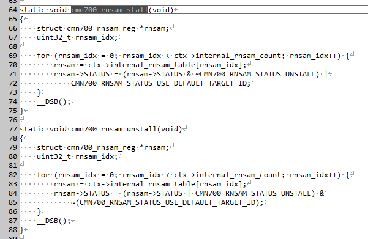
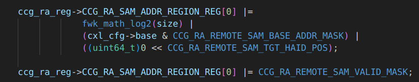
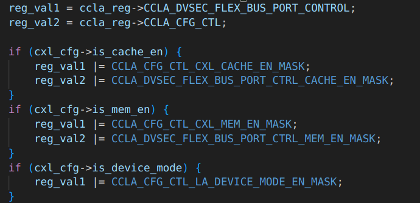
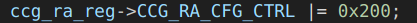
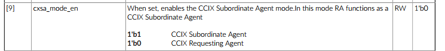
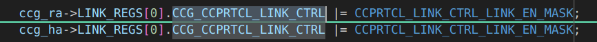
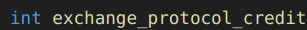
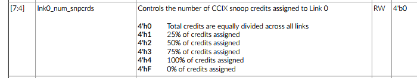

CXL in SCP and EDK2
SCP 固件中实现了对CXL功能的支持，基于开源的代码，学习相关的配置。
CCG 配置
-
SHA-1: bc14e780c120fc656ce905d6e219078a0006da88
- module/cmn700: configuring CCG for mapping Host address to CXL mem
A Memory region is reserved for CXL Memory. CXL.Mem (0x3fe_0000_0000) comes under 4TB Chip-0 memory and the whole region is by default configured as SCG. Configured CXL.Mem region in HNF-SAM HTG and CCG SA node IDs for HTGs in following order -
HNF_SAM_CCG_SA_NODEID_REG HNF_SAM_HTG_CFG3_MEMREGION HNF_SAM_HTG_CFG2_MEMREGION HNF_SAM_HTG_CFG1_MEMREGION
CXL Memory region is accessible as Normal memory with above configuration.
This patch maps Host address space to CXL device mem area through CCG node, based on the CXL device memory size, which is discovered by CXL module. CXL module invokes runtime CMN700 API for mapping the host address space and configuring CCG node.
This patch also adds a flag "cxl_mem" in CCG_Config structure for identifying host region and configuration reserved for CXL device memory purpose and thus differentiating from Remote chip memory.
Signed-off-by: Sayanta Pattanayak sayanta.pattanayak@arm.com Change-Id: I988f471db6a6a55f97320519413daedd8ea524fb
config_cmn700.c
N2 参考设计中，将0-0x40000000000全都设置为SCG 属性，
然后再从HNSAM中将0-0x3fe00000000设置为CCG-cxl_mem属性。
#if (PLATFORM_VARIANT == 1)
static const struct mod_cmn700_ccg_config ccg_config_table_chip_0[] = {
{
.remote_rnf_count = 0,
.remote_mmap_table = {
.base = UINT64_C(0x3fe00000000),
.size = UINT64_C(8) * FWK_GIB,
.type = MOD_CMN700_REGION_TYPE_CCG,
},
.ra_mmap_table = {
{
.base = UINT64_C(0x3fe00000000),
.size = UINT64_C(8) * FWK_GIB,
.remote_haid = 0,
},
{ 0 }
},
.remote_agentid_to_linkid_map = {
{
.remote_agentid_start = (RNF_PER_CHIP * CHIP_0),
.remote_agentid_end = (RNF_PER_CHIP * CHIP_0)
},
},
.smp_mode = false,
.cxl_mem = true,
},
};
#endif
增加了一个entry，一共8G，同时增加了一个flag cxl_mem。类型是CCG。
static int cmn700_setup_rnsam_ccg_regions(void)
{
const struct mod_cmn700_config *config;
const struct mod_cmn700_mem_region_map *region;
struct cmn700_rnsam_reg *rnsam;
unsigned int count;
unsigned int cxra_ldid;
unsigned int cxra_node_id;
unsigned int idx;
uint32_t bit_pos;
uint32_t group;
config = ctx->config;
/* Do configuration for CCG Nodes */
for (idx = 0; idx < config->ccg_table_count; idx++) {
region = &config->ccg_config_table[idx].remote_mmap_table;
if (region->type != MOD_CMN700_REGION_TYPE_CCG) {
return FWK_E_DATA;
}
FWK_LOG_INFO(
MOD_NAME " [0x%llx - 0x%llx] %s",
region->base,
region->base + region->size - 1,
mmap_type_name[region->type]);
/* If the region is for extended memory area like CXL.Mem
* and connected through CCG then the region shouldn't be
* marked as Non-Hash region. CXL.Mem region should be part
* of Hashed cache group area.
*/
if (config->ccg_config_table[idx].cxl_mem == true)
continue;
for (count = 0; count < ctx->internal_rnsam_count; count++) {
rnsam = ctx->internal_rnsam_table[count];
在配置CCG 时候，如果是CXL.Mem，就不应该用non-hash，而是用hash。
static int map_ccg_for_cxl_mem(uint64_t size)
{
uint32_t idx;
const struct mod_cmn700_config *config = ctx->config;
const struct mod_cmn700_ccg_config *ccg_config;
cmn700_rnsam_stall();
/* Do configuration of CCG Node for mapping remote CXL Mem area. */
for (idx = 0; idx < config->ccg_table_count; idx++) {
ccg_config = &(config->ccg_config_table[idx]);
if (ccg_config->cxl_mem == true)
ccg_setup_for_remote_mem(size, ctx, ccg_config);
}
cmn700_rnsam_unstall();
return FWK_SUCCESS;
}
这里新增了一个API，用来设置CCG CXL.Mem
同时，发现这里有个rnsam stall和unstall 函数，看起来是用来暂停rnsam的。不会产生路由地址，而是直接将所有的请求发给default node。
当前项目，直接将STATUS寄存器设置为了0x2，也就是unstall，enable RNSAM。
问题：如果需要online 更新RNSAM，是否就需要调用stall接口。


ccg_setup_for_remote_mem
int ccg_setup_for_remote_mem(
uint64_t size,
struct cmn700_device_ctx *ctx,
const struct mod_cmn700_ccg_config *ccg_config)
{
uint64_t reg_val;
unsigned int index;
unsigned int ccg_ldid;
struct cmn700_hnf_reg *hnf_reg;
struct cmn700_ccg_ra_reg *ccg_ra_reg;
cmn700_ccg_ctx.is_prog_for_port_agg = false;
/* Enable CXSA */
ccg_ldid = get_ldid(ctx, cmn700_ccg_ctx.is_prog_for_port_agg);
ccg_ra_reg = ctx->ccg_ra_reg_table[ccg_ldid].ccg_ra_reg;
for (index = 0; index < ctx->hnf_count; index++) {
/* Programming sequence to enable CXL.mem regions inside HNSAM */
hnf_reg = (struct cmn700_hnf_reg *)ctx->hnf_node[index];
/* Configuring CCG SA node IDs for HTGs in the HNSAM */
reg_val = hnf_reg->HNF_SAM_CCG_SA_NODEID_REG[0];
reg_val &= ~(CMN700_HNF_SAM_CCG_SA_NODEID_MASK);
reg_val |= get_node_id(ccg_ra_reg);
hnf_reg->HNF_SAM_CCG_SA_NODEID_REG[0] = reg_val;
/* CXSA/CXLSA aggregated SA selection function */
/* 用来指定这个region映射到几个SN NODE，如8SN node, 或者是CXSA 模式 */
hnf_reg->HNF_SAM_HTG_CFG3_MEMREGION[0] |=
(CMN700_HNF_SAM_HTG_MODE_CXSA <<
CMN700_HNF_SAM_HTG_SN_MODE_POS);
/* 64B interleaved */
/* CXSA 模式下的 interleaved 颗粒度，这里只清除了，没有置位，说明用的默认0，64B */
reg_val = hnf_reg->HNF_SAM_HTG_CFG3_MEMREGION[0];
reg_val &= ~(CMN700_HNF_SAM_HTG_SA_DEVICE_INTERLEAVE_CNTL_MASK <<
CMN700_HNF_SAM_HTG_SA_DEVICE_INTERLEAVE_CNTL_POS);
hnf_reg->HNF_SAM_HTG_CFG3_MEMREGION[0] |= reg_val;
/* 1 CXSA/CXLSA port used */
/* 这里只清除了，没有置位，说明用的默认0 */
reg_val = hnf_reg->HNF_SAM_HTG_CFG3_MEMREGION[0];
reg_val &= ~(CMN700_HNF_SAM_HTG_SA_PORTS_CNT_MASK <<
CMN700_HNF_SAM_HTG_SA_PORTS_CNT_POS);
hnf_reg->HNF_SAM_HTG_CFG3_MEMREGION[0] |= reg_val;
/* htg_region_end_addr[51:20] = end address of HTG region */
reg_val = ccg_config->ra_mmap_table[0].base +
(size - 1);
reg_val &= ~(CMN700_HNF_SAM_HTG_REGION_ADDR_RES_MASK);
hnf_reg->HNF_SAM_HTG_CFG2_MEMREGION[0] |= reg_val;
/* htg_region_base_addr[51:20] = start address of HTG region */
reg_val = ccg_config->ra_mmap_table[0].base;
reg_val &= ~(CMN700_HNF_SAM_HTG_REGION_ADDR_RES_MASK);
hnf_reg->HNF_SAM_HTG_CFG1_MEMREGION[0] |= reg_val;
/* Configuring HTG region as Valid */
hnf_reg->HNF_SAM_HTG_CFG1_MEMREGION[0] |=
(UINT64_C(0x1) << CMN700_HNF_SAM_HTG_REGION_VALID_POS);
}
/*
* Program the CXRA SAM with the address range and the corresponding
* remote HAID.
*/
program_ccg_ra_sam_addr_region(ctx, ccg_config);
update_cxl_mem_region(ccg_config->ra_mmap_table[0].base,
ccg_config->ra_mmap_table[0].size);
return FWK_SUCCESS;
}
实际应用
link前
主要是寻址范围，cxl 类型，cxsa enable等。
- RA 的 SAM region: 范围
- RA 的 SAM valid：valid有效位


- CCLA的flex bus control： MEM CACHE
- CCLA的config control： MEM CACHE





link后



